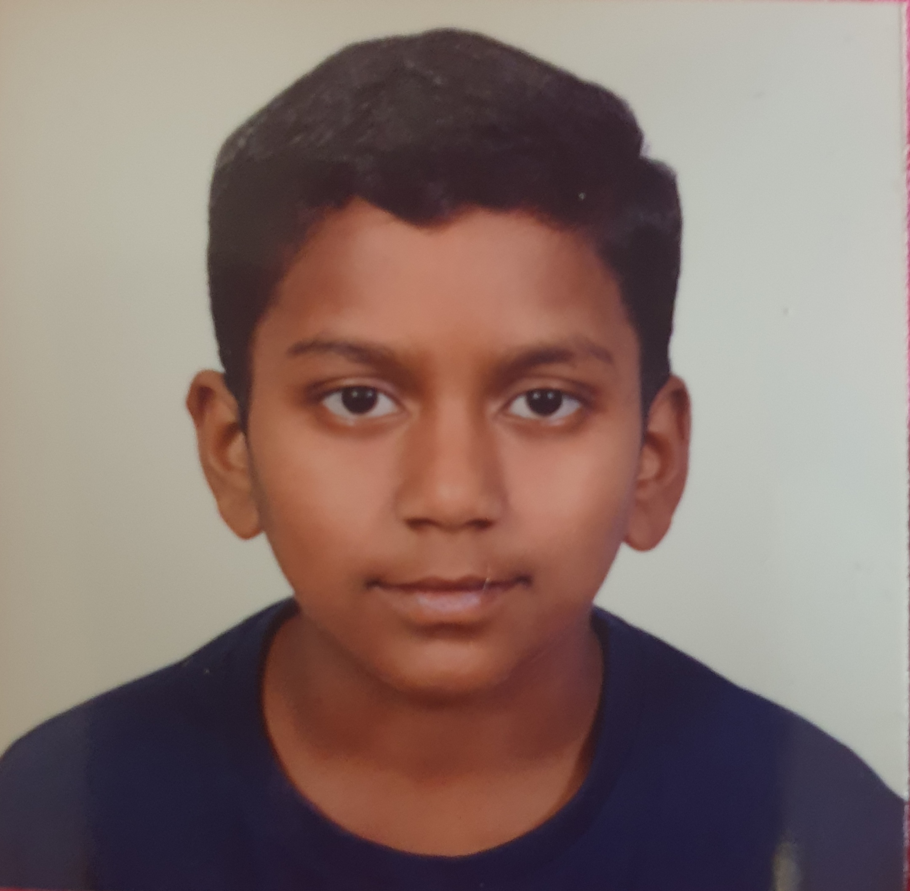

About Me
The world has many people and one of those is a boy called Raaghav which is none other than myself . To start with to introduce myself I am a good, kind, friendly, sometimes angry, caring, happy and a loving 11 year boy studying in class 7 Birla public school Doha- Qatar .
I want to be proud to say I am the son mr Muthukumaar a manger of project in mechanical engineering and mrs Dhivyaa a housemaker .I have an intelligent angry and kind sibling name as Raksha and a gentle soft and a very kind sister named Revathi. My younger sister Raksha is studying class 9 in Birla public school Doha- Qatar. My elder sister Revathi at the age of 21 is studying in India. she in a year will start working. to begin with I am a big fan of cricket. watching youtube is my favourite time pass and playing with my sister is a lot of fun. I like helping my mother a lot as she is the one who does maximum of the work and rarerly relaxes. My ambition it to become a stanford graduate and become businessman. My favourite hobbie is doing html and playing cricket. I have won many drawing competitions at my school. I am extremely thankful to my parents, my school friends and my loving teacher for being kind and helpful to me.Life is a great gift. Those people are really lucky who have got good family, friends and teachers. Since, they are instrumental behind the success of every man in this world. In that way, I feel very lucky and confident for being able to achieve all.
few of some special images.